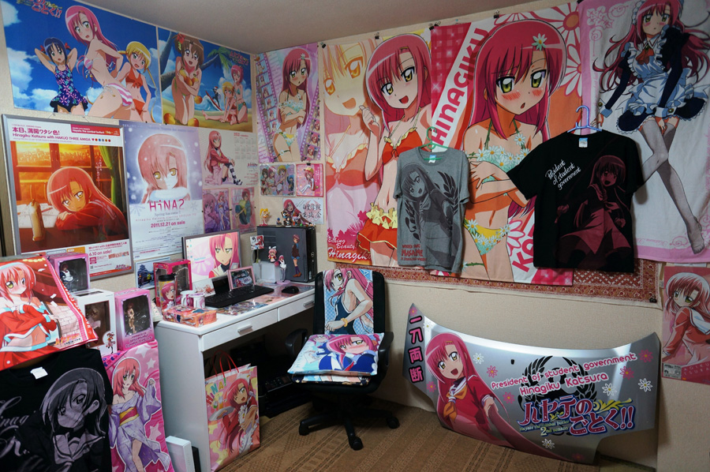

What is a waifu and husbando?

Hello and welcome to Anime Fan Helper. Here is another one of our information stories about new pop culture terms. Today, we are looking at waifu and husbando. The terms are rather new, so don’t be alarmed if you never heard of them before. That’s what we are here for. To put it simply, a waifu is a fictional female character you have romance feelings for while a husbando is a fictional male character you have feelings for. It is pretty simple, right? Well, it gets more complex.

First, you should not confuse “Best Girl” with a waifu. “Best Girl” refers to the best girl of that season or show. Weebs tend to get mad when you do this. There are some however, who tend to have a waifu and/or a husbando for a season and then jump ship to another waifu and/or husbando the next season. It is also not uncommon for people to be a polygamist and have more than one waifu and husbando. There is room in the heart for all after all. None of them are wrong. You, as an individual, do have the freedom to choose.
While others will claim that their waifu or husbando is their girlfriend or boyfriend, we at Anime Fan Helper are not sure if they are serious or not. People will express their feelings for a waifu or husbando in various ways. One of the most common ways is having a full body-pillow of their waifu or husbando. They also may have many figures of them. You will often see people buying posters and banners with their waifu or husbando on them. Some get very creative in expressing their love for their waifu or husbando through drawings and other forms of art.

It is not weird nor does a person have a problem simply because they have a waifu or husbando. Often times, people either can’t find their ideal mate or lover so they turn to a waifu or husbando for this. There are some who just generally don’t like 3D people and prefer the 2D kind. By 3D, I’m talking about other humans. Humans tend to be unpredictable and change. There is a saying among otakus, “2D is better than 3D.” This is what they are referring to.
Well that’s all the information on waifus and husbandos. In the comments below, tell us who your waifu or husbando is. Do you have more than one? Do you have items such as body pills, figures, posters, or artwork of your waifu or husbando? We’d love to hear from you! Have a great day from your friends at Anime Fan Helper.
Anime Fan Helper. All Right Reserved. Coperight 2020.